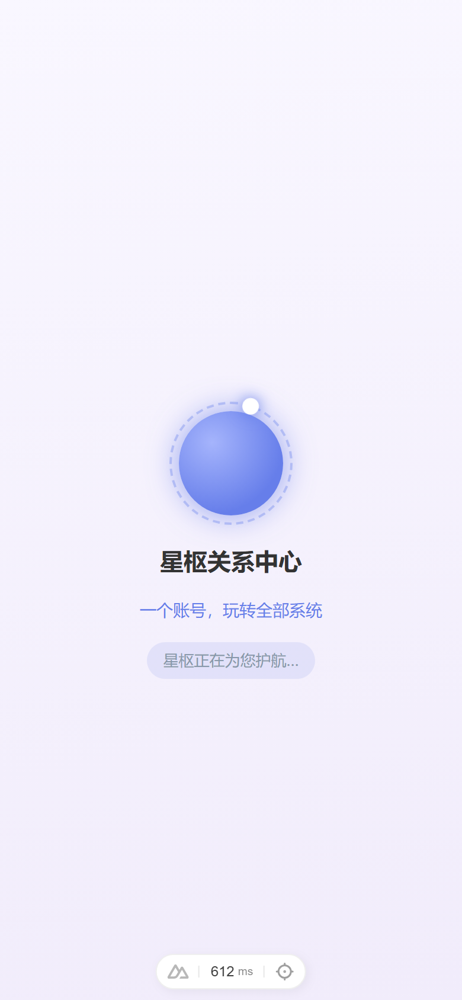
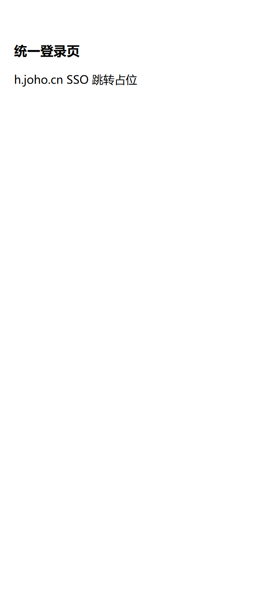
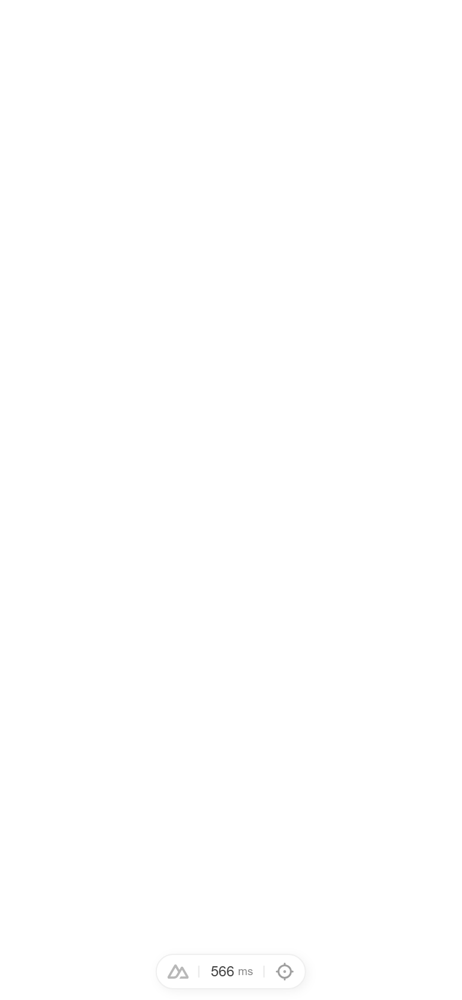

提交 baa19b6 起含 Task1（等待遮罩焕新）；本页为 Task2 手机视口截图回归 + 手册更新。日期 2026-09-22。
微信内置浏览器未登录进入商城时，会自动跳转 h.joho.cn 统一登录页完成 SSO 静默授权。原实现在跳转前需实时网络拉取 SSO provider，出现白屏等待。本方案三项改造（登录链路未动，预取/跳转逻辑保持 Task1 既有）：
useSso.startProviderPrefetch() 在 app.vue setup 即幂等预取 provider（localStorage 10 分钟 TTL 缓存）；跳转时 getRedirectProvider() 预取命中 → 省略二次网络，立即跳转。pending=true，未登录 + 微信环境渲染品牌遮罩 <SsoAwaitOverlay />（星枢紫 #667eea），替代原白屏。div.sso-orb 三件套——品牌紫发光球（core）、虚线轨道环（ring）、白点卫星环绕（sat，1.6s 匀速公转）；整体居中上移排版；标题精简为「星枢关系中心」；状态胶囊「星枢正在为您护航…」；4 条广告语轮播（2.6s 淡入切换）；prefers-reduced-motion 时关闭旋转/轮播动画，仅静态品牌卡。| 场景 | 行为 |
|---|---|
| 预取命中（缓存/lazily 已就绪） | 直接复用预取 provider，遮罩几乎不闪，立即跳 h.joho.cn |
| 预取未命中（等待期） | pending=true → 品牌遮罩兜底，同时实时拉取补齐 |
| 无 provider | pending=false，不跳转、不遮罩，停留当前页 |
| 非微信 / 已登录 / 跳过页 | 不触发自动登录，shouldShowOverlay 恒 false，遮罩不出现 |
prefers-reduced-motion | 关闭旋转/轮播/淡入动画，仅静态品牌卡（可访问性降级） |
纯函数可测：selectPrimaryProvider（预取命中 > 实时）、shouldShowOverlay({pending,authenticated,isWechat}) 抽出在 layers/base/app/utils/sso-provider.ts，TDD 单测覆盖。
| 项 | 命令 | 结果 |
|---|---|---|
| 全量单测 | npm test | 109/109 通过（16 文件，含 sso-provider.spec 6 it） |
| 生产构建 | pnpm run build（真实部署门卡） | 成功；仅历史无关 warning（dulicated imports / tailwind sourcemap / fonts 预取），无错误 |
| 手机视口截图 | Playwright 390×844 @ dpr2（最终 780×1688） | 3 张，见下 |

pending=true 保持，捕捉到焕新后品牌遮罩——放大星轨卫星环（sso-orb 发光core + 虚线ring + 白点sat 环绕）、标题「星枢关系中心」、状态胶囊「星枢正在为您护航…」、广告语轮播。像素核验 ring 边界 rgba(102,126,234,0.35) 命中品牌紫 #667eea。

.sso-await-overlay count=0，正常渲染商城首页（回归，不误出焕新遮罩）。